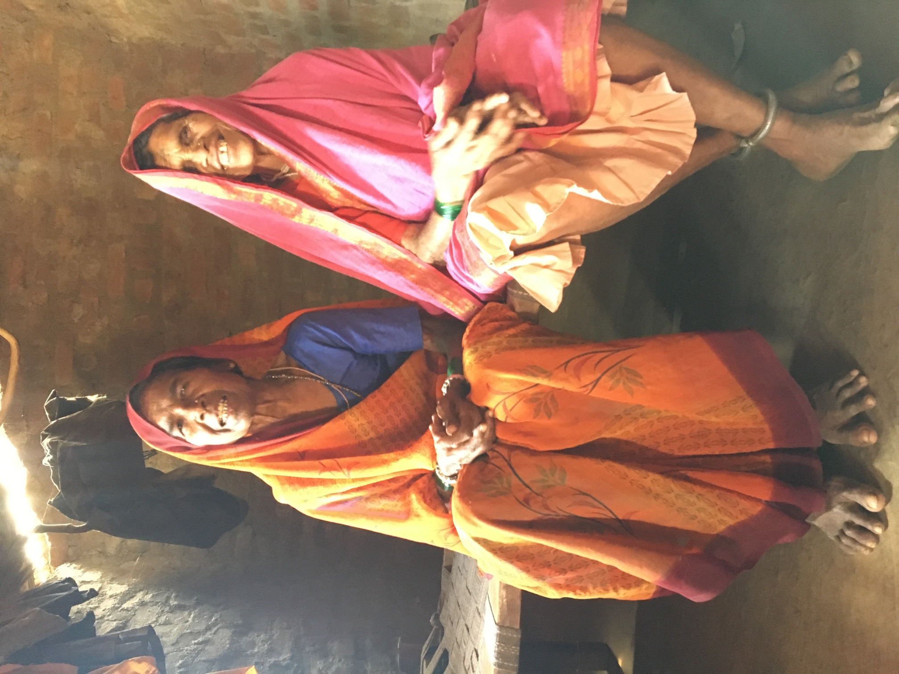

Dissertation Research
My dissertation project examines how class, caste, and gender intersect in urban slums of India, to shape aspirations for “good life” for women belonging to lower caste communities, predominantly engaged as informal labor. This ethnographic inquiry examines the lived experiences of women belonging to lower caste communities and Dalit (individuals cast outside the caste system, also formerly known as “untouchables”) Women, navigating the fragile informal labor sector which offers very minimal official social protection in India. My research explores three interconnected dimensions around the mentioned women workers in India’s informal labor sector. I seek to understand their aspirations for a “good life” and examine how the intersecting dimensions of class, caste, and gender within urban slums shape these aspirations. Building on this foundation, I investigate the key barriers and enabling factors these women experience in their pursuit of a good life. I explore how these aspirations and their pursuit carry important implications for both state and non-state actors who design and implement policies and programs intended to promote the well-being of the lower caste and marginalized. Through this multi-layered inquiry, I illuminate the personal and social dimensions of these women’s experiences and their broader significance for state and non-state policies and programs aimed at promoting their well-being.
Broader Implications for the Global South and Anthropology
This ethnographic research offers critical insights for understanding urbanization processes across the Global South, where rapid development often creates similar paradoxes of simultaneous inclusion and exclusion. By documenting how women navigate between traditional constraints and modern opportunities in Hyderabad, the work illuminates patterns likely present in other rapidly developing cities from Lagos to Lima, where proximity to opportunity doesn’t necessarily translate to meaningful access. For development policy, these findings challenge conventional approaches that focus primarily on access without addressing how social hierarchies reconfigure themselves within new urban spaces.
For anthropological scholarship, this research makes a significant methodological contribution by demonstrating how sustained attention to women’s everyday practices reveals sophisticated forms of agency often invisible to macro-level analyses. The work expands anthropology’s engagement with intersectionality by showing how caste, class, and gender interact differently across urban contexts, requiring theoretical frameworks that can account for both structural constraints and emergent possibilities. By centering lower-caste women’s interpretations of their own experiences rather than imposing external frameworks, the research advances anthropology’s decolonial turn while providing empirically grounded insights into how marginalized communities actively construct meaning and pursue dignity within seemingly rigid social structures.
Dissertation Chapters
Barring Introduction, Methodology, Literature Review and Conclusion chapters, my dissertation is organized into four substantive ethnographic chapters: